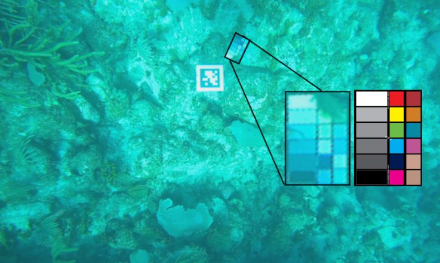
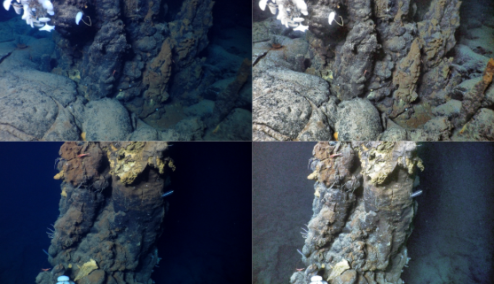
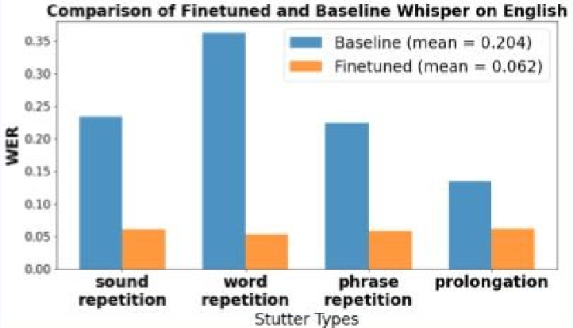
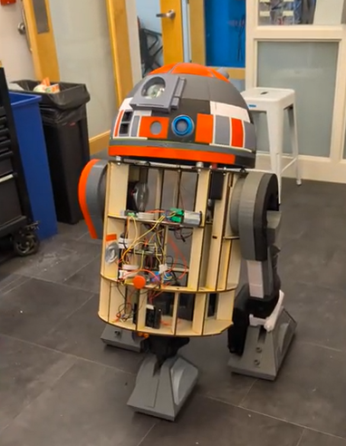

Anika Mahesh
Building Intelligent Robots
-->
Research Experience

Color Card Detection on CUREE AUV - Woods Hole Oceanographic Institution (WHOI) - Summer 2025
- I am working on designing and fabricating a
- Generated a synthetic dataset in NVIDIA Isaac Sim, simulating varied lighting and water conditions to improve model generalization.
- Researched and designed a mutual information-based image registration pipeline.
- The work was presented in the WHOI summer student postor presentation and contributed to lab preliminary research.
Color Card Detection on CUREE AUV - Woods Hole Oceanographic Institution (WHOI) - Summer 2025
- I designed and implemented an object detection pipeline using YOLOv11 and mutual information–based image registration to identify and extract information from small, low-resolution underwater color cards.
- Generated a synthetic dataset in NVIDIA Isaac Sim, simulating varied lighting and water conditions to improve model generalization.
- Researched and designed a mutual information-based image registration pipeline.
- The work was presented in the WHOI summer student postor presentation and contributed to lab preliminary research.

Documented Performance of Off the shelf Color Correction Algorithms on Deep Sea Footage- Spring 2025
- Color correction is important to remove haze and light attenuation on underwater images however most of these algorithms are built for coastal regions where there is a lot lighter. This project aimed to test the functionality of these algorithms deep in ocean.
- Read literature on underwater color corrections and chose a few off the shelf algorithms to test on a deep-sea dataset of hydrothermal vents
- Made qualitative observations on the performance of different algorithms
- Attempted to use light enhancing algorithms to brighten deep sea imagery after color correction which resulted in information loss and amplification of errors in color correction.
Read More

Investigating Single Qubit Interactions - Mentorship at Harvard Quantum Initiative - Fall 2025
- Mentor: Prof. Nishant Sule
- Implementing simulations of spin precession and Rabi oscillations using Hamiltonian-based
models in Python QuTiP library
- Simulated and calculated time evolved expectation value and probablity values during spin precession and rabi oscillations
- Solved time-dependent Schrödinger equation with numerical integration techniques to analyze qubit dynamics.
- Produced a technical blog post explaining the derivations and code for educational outreach
Read More

Finetuning OpenAI's Whisper to better Transcribe non Standard Speech Patterns - Fall 2024
- Fine-tuned Whisper for stuttering speech in both English and Mandarin
- One of the major constraints we faced was limited GPU access, so we had to be strategic with our training running intermediate models, experimenting with learning rates, and choosing a cloud computing platform to use. We Experimented with Google Colab and Amazon Sage maker for High Performance Computing.
- In the end, we achieved a 14.2% reduction in Word Error Rate for English and a 47.4% reduction in Character Error Rate for Mandarin and presented our findings as a poster at the AAAS conference.
Read More
Systems Integration Experience

Astromech - OL1N - R2D2 clone - Fall 2025
- We created our own astromech which we could drive around and control with a remote controller connected to the robot via Bluetooth. It also beeped if it detected a person in front of it. I led the electrical and software integration for the robot system.
- I implemented the camera and speaker integration for the robot head as well as the motor system for the head and drive motors. I also worked on the Bluetooth connection on the robot side. I did all the voltage calculations and installed necessary estops and fuses to ensure the robot was safe.
- Debugged Electrical System with Oscilloscope and multimeter to verify system functioning when the motor stalls and signals sent to the sabertooth motor controller and the microstep driver were in the valid format.
Read More + Video
ADHD Glasses - Spring 2025
- Glasses that block out peripheral vision at the press of a button. This would improve the focus and concentration of people with ADHD or people who have difficulty focusing by cutting out visual distractions.
- I implemented the camera and speaker integration for the robot head as well as the motor system for the head and drive motors. I also worked on the Bluetooth connection on the robot side. I did all the voltage calculations and installed necessary estops and fuses to ensure the robot was safe.
- Sourced and experimented with PDLC smart glass which can turn clear when there is no electric current applied and opaque when there is an electric current applied.
- I created a very intial prototype glass for later testing with a focus group.
Technical Explorations
🛰
Combinatorial Design based Swarm Robot Communication Protocol
🧩
Maze Solving Algorithms
📻
Detecting VOR signals using SDR
🌍
Game of Life in System Verilog